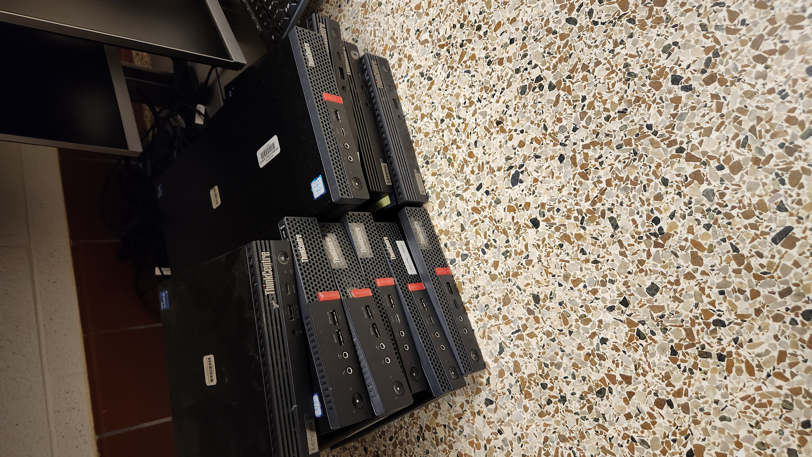
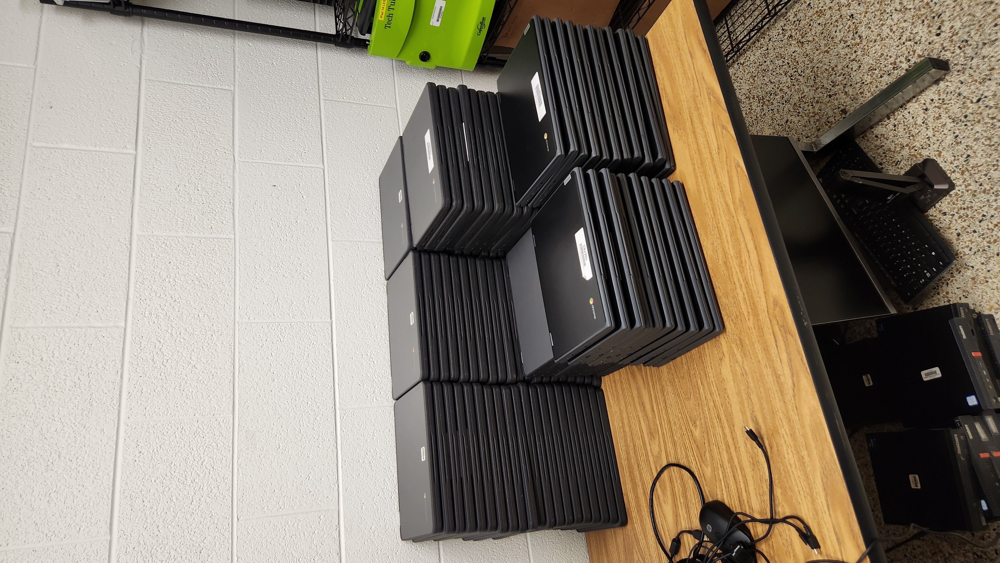

Skills on the Job
My professional journey is defined by a passion for solving complex technical puzzles, starting with industrial automation and evolving into enterprise IT and cloud systems.
IT Support Specialist
Portsmouth Public Schools | October 2025 – Present
- Systems Management: Utilized Microsoft Configuration Manager (MCM/SCCM) to deploy operating system images and task sequences for end-user devices.
- Technical Support: Managed over 1,000 devices, resolving complex technical Customer Service Requests via phone, email, and in-person support.
- Performance Maintenance: Performed onsite and remote diagnosis, repairs, and upgrades for Windows, Mac OS, and Chrome OS workstations.
- Asset Management: Documented all equipment activities in the Incident IQ ticket system and conducted research for future PC procurement.
Technical History
CompQSoft & Trane Technologies | 2020 – 2025
- Help Desk Support: Resolved 25–50 tickets daily for the U.S. Coast Guard, achieving a 95% first-call resolution rate for hardware and network issues.
- Identity Management: Managed Active Directory accounts, including password resets, group memberships, and access permissions using BMC Remedy.
- IoT Automation: Programmed and troubleshoot HVAC IoT controllers for industrial applications, creating custom logic and graphics.
- Network Configuration: Configured IP addressing, internet settings, and system databases for Trane IoT devices and buildings.